So today I received the new HeroQuest in the mail. Last year, I backed the Hasbro-run crowdfunding campaign to remake it. I backed at the highest level, the "Mythic" tier, which came with quite a few extra goodies.
I plan on writing a second blog post after I play it a few times.
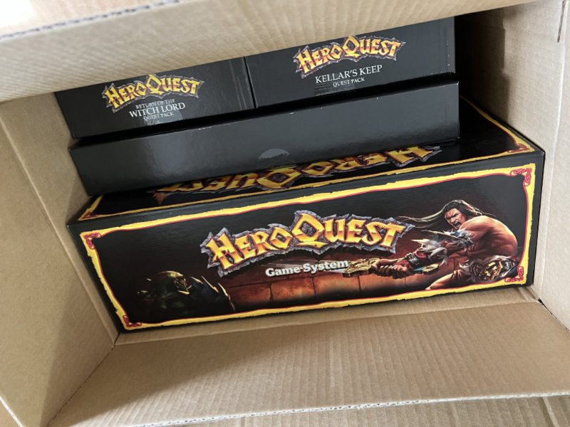Opening up the shipping box!
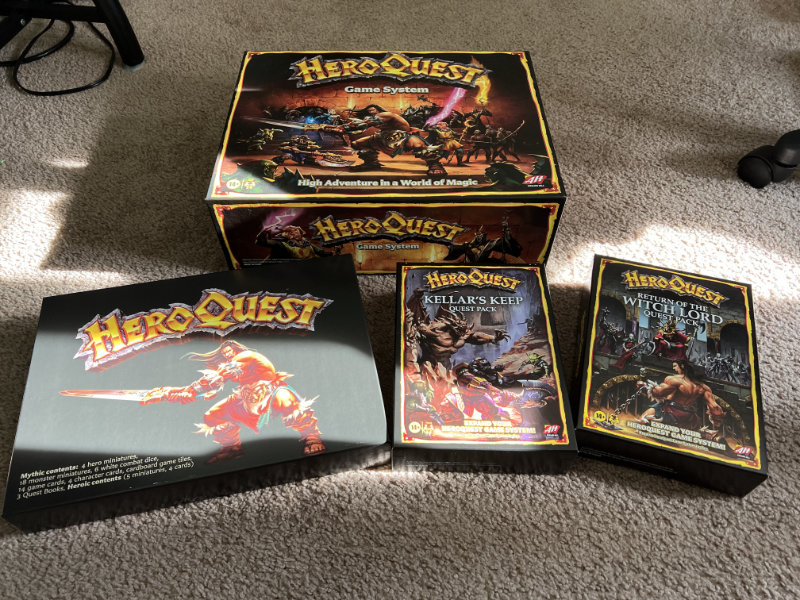The contents of the shipping box.
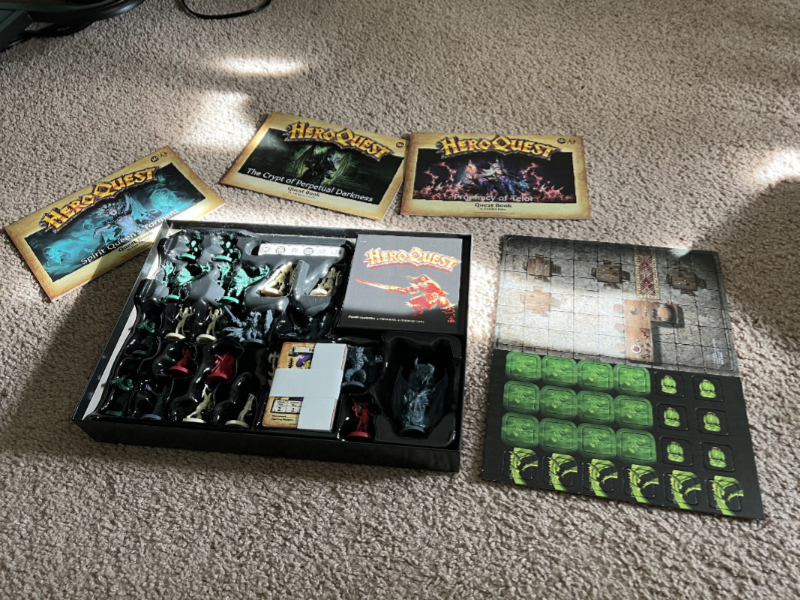This is what came in the Mythic-exclusive box.
What follows is a series of photos comparing my copy of the original game released in the late 80s to the new one.
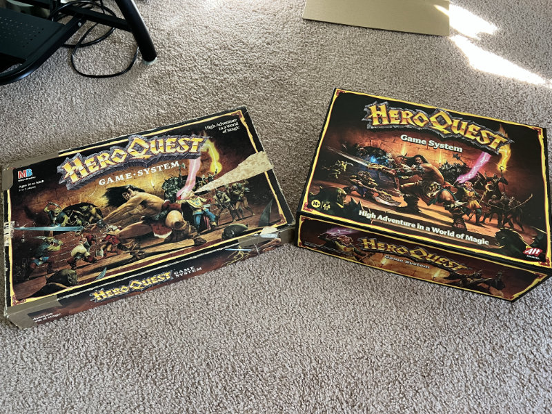The original box is shorter and wider. The artwork on the new one is a nice tribute to the original.
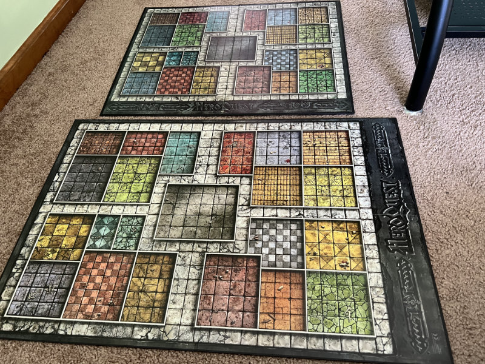The board in the new one is a bigger scale but otherwise follows the layout of the original.
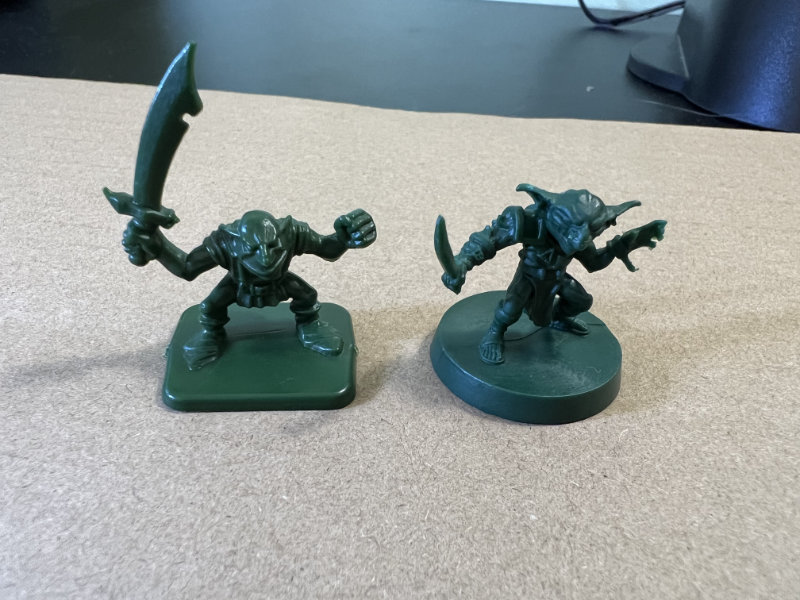On the left is a goblin from the original, and on the right is the new one. The originals were made of a hard plastic; the new ones are a softer plastic. I'm not sure if they'll hold paint well yet.
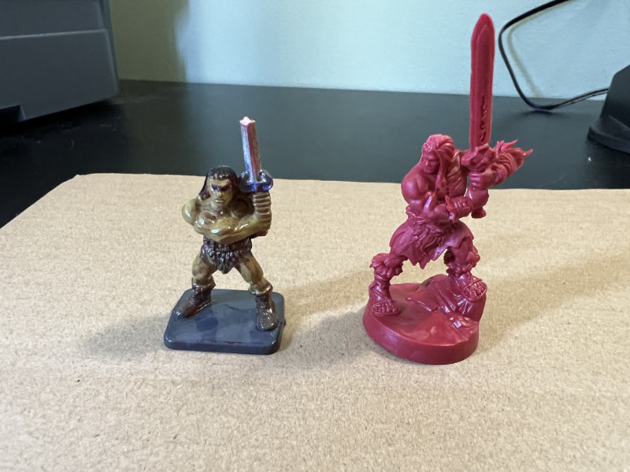On the left is the barbarian that I painted when I was a teenager, with the sword partially broken. On the right is the new barbarian. Not shown here is the female barbarian that came in the Mythic box.
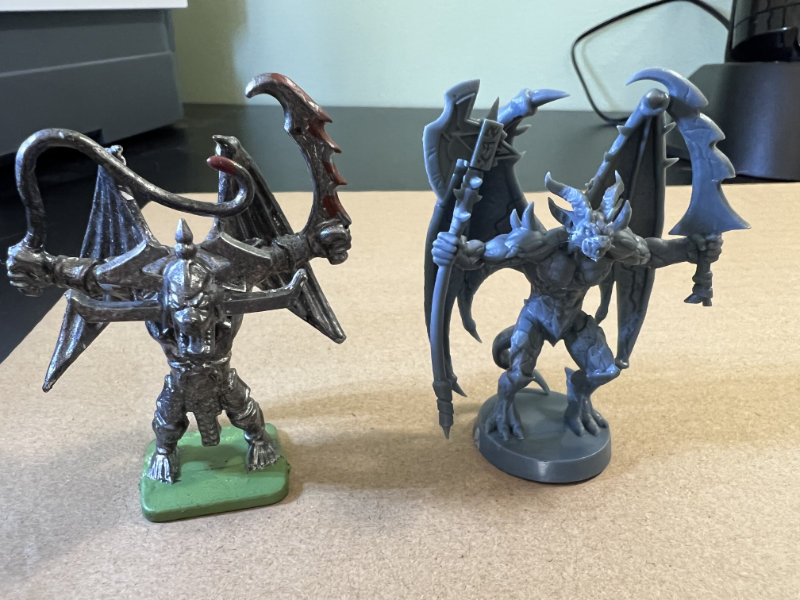The gargoyle in the new one is slightly bigger and has an axe instead of a whip. Otherwise it's pretty close to the original.
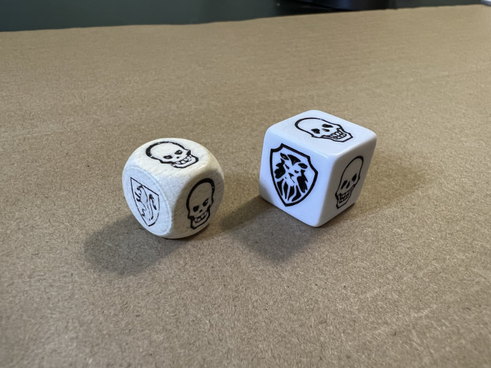The new dice are bigger and less round. The shield is a different symbol, too. I think these will be easier to roll, honestly.
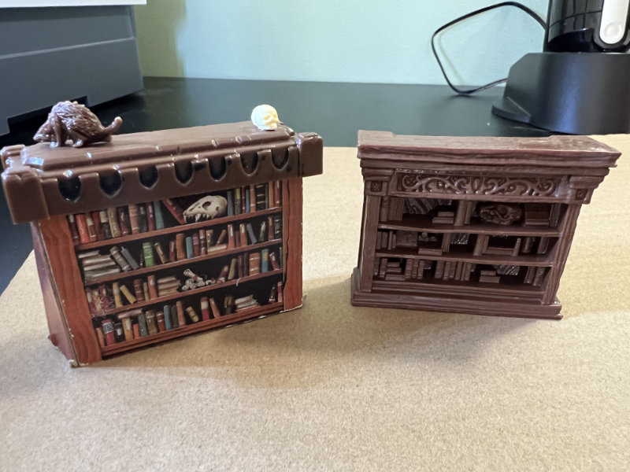All of the furniture in the new game is full plastic 3D models. The furniture in the original was cardboard with some plastic parts. Not shown here are the rats and skulls that come in the new set.
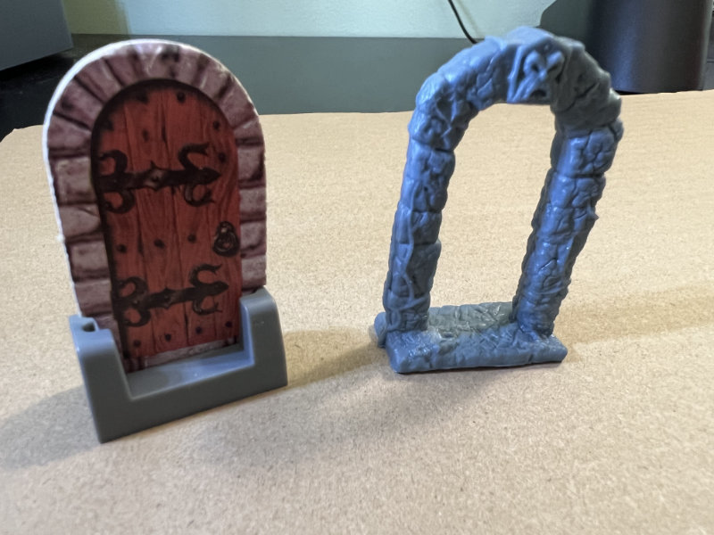I like the new doors better, though one or two of the ones in my box are slightly warped.

The new character sheets are almost identical to the original, but there are a LOT more of them. This is a thick set.
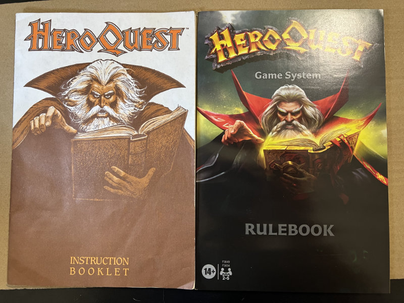The rulebook in the new version is full color on glossy paper. The artwork is much improved. I haven't dug through the rules to see if the layout is changed, though.
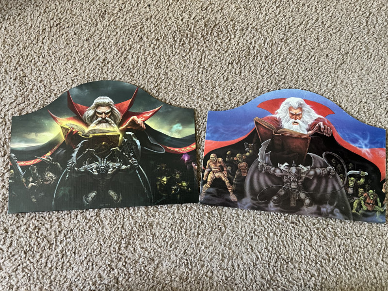The Zargon player's screen is the same size as the original, but it has new artwork.
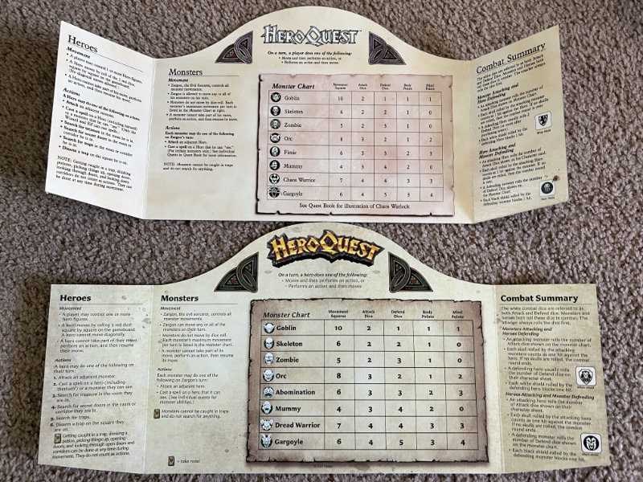The reverse of the Zargon player's screen has mostly the same information, although the names of some of the monsters are different and the text is laid out better.
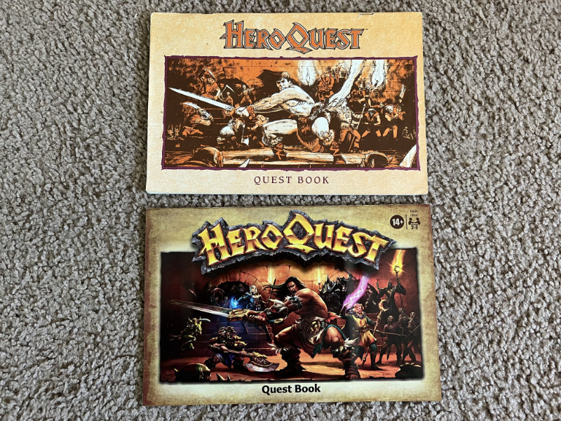The new quest book is also full color glossy. Again, I haven't flipped through it yet.
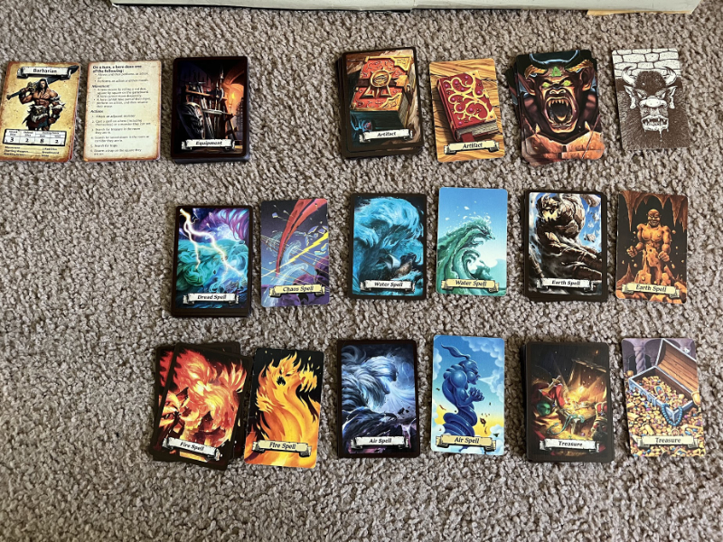Each of the original cards is present in the new version, but with new artwork. Also, Chaos Magic has been renamed Dread Magic, and there are new equipment cards, player rule reference cards, and character cards.